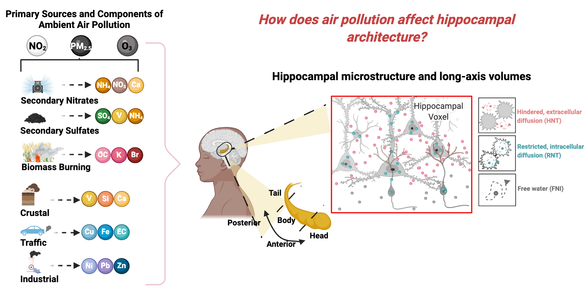
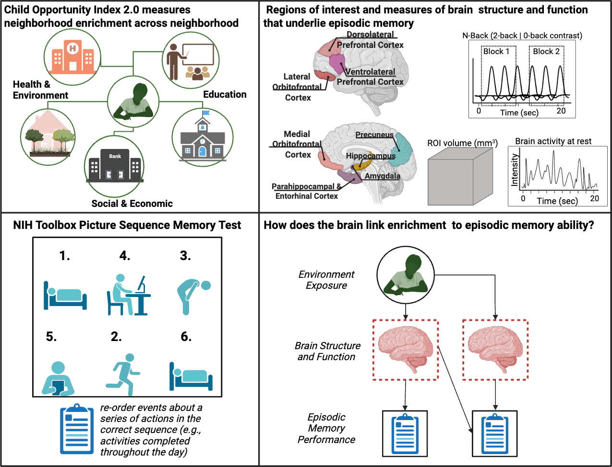

Research
Environmental Exposures and the Developing Brain
My current research focuses on the impact of ambient fine particulate matter (PM2.5) air pollution on neurodevelopment, particularly how these exposures influence the structure and function of memory-related brain systems. I apply expertise in structural neuroimaging to investigate how pollutant mixtures affect hippocampal microstructure and long-axis segmentation. This work also evaluates the links between these neural features and learning and memory performance during childhood. In the Herting lab, I’ve contributed to a scoping review on air pollution’s impact on neurodevelopment and an empirical study assessing how air pollution sources relate to cortical structure in pre-adolescents.
Environmental Enrichment and Memory Performance
In parallel, I study how enriched neighborhood environments shape memory development. Under the mentorship of Dr. Wesley Thompson, I’m currently examining how brain structure and function mediate associations between environmental enrichment (indexed via the Childhood Opportunity Index 2.0) and episodic memory. Our findings suggest that prefrontal working memory activity partially mediates the link between environmental enrichment and episodic memory performance. This line of research integrates measures of neighborhood context, task-based fMRI, and behavioral outcomes to uncover how environmental opportunities scaffold memory systems.
Fitness and Medial Temporal Lobe Structure
During my PhD, I investigated the role of cardiorespiratory fitness in modulating brain structure across the medial temporal lobe. Using surface-based neuroimaging methods, I found that higher fitness levels in young adults were associated with increased cortical thickness in the entorhinal, parahippocampal, and perirhinal cortices—regions critical to spatial cognition and memory. This association was not observed in older adults, suggesting age-specific sensitivity to fitness-related neuroplasticity. This work resulted in a first-author publication: EJN, 2024.
Psychosocial Stress and Hippocampal Structure in Older Adults
Also during my PhD, I examined how chronic psychosocial stress, particularly perceived discrimination, relates to medial temporal lobe structure among older adults. I found that greater perceived discrimination was associated with smaller anterior hippocampal and amygdala volumes—brain regions involved in memory and emotion regulation. Importantly, higher levels of personal mastery (i.e., perceived control and agency) appeared to buffer these effects. Among individuals with high mastery, the relationship between discrimination and brain volume was no longer significant. This work is available as a preprint: bioRxiv, 2024.